Vertical Axis Wind Turbine
Serving as the Lead Mechanical Systems Engineer and Lead Test Engineer on a five-person team, I helped design and fabricate a vertical-axis wind turbine capable of generating 500 W at wind speeds of 25 mph. I coordinated and executed key testing procedures, including feasibility analysis of the braking system, rotor performance verification using dimensionless analysis in a wind tunnel, and generator characterization. I also planned and led a series of validation tests, including a Wind Speed–RPM Calibration Test, RPM–Power Test, Transportation Test, and Locking Mechanism Test. In addition to testing, I conducted aerodynamic studies on angle of attack, aspect ratio, and airfoil selection, and I engineered a custom gearbox with accompanying couplings designed for fatigue resistance and long-term mechanical durability.
Highlights
- Supports both autonomous operation and a maintenance mode for safe servicing
- Designed for optimal efficiency at 25 mph and durability up to 40 mph wind conditions
- Generates power across a wind speed range of 10–40 mph
- Integrated system delivers standard AC voltage
- Equipped with mechanical brakes and overcurrent protection for high-wind and maintenance safety/li>
Supporting Documents
- EG‑499 Team Zephyrus Poster Presentation
- Gear Ratio & Torque of Blades per TSR and Airfoil (Excel)
- H‑Rotor 1.25 Aspect Ratio (Excel)
Project Gallery


 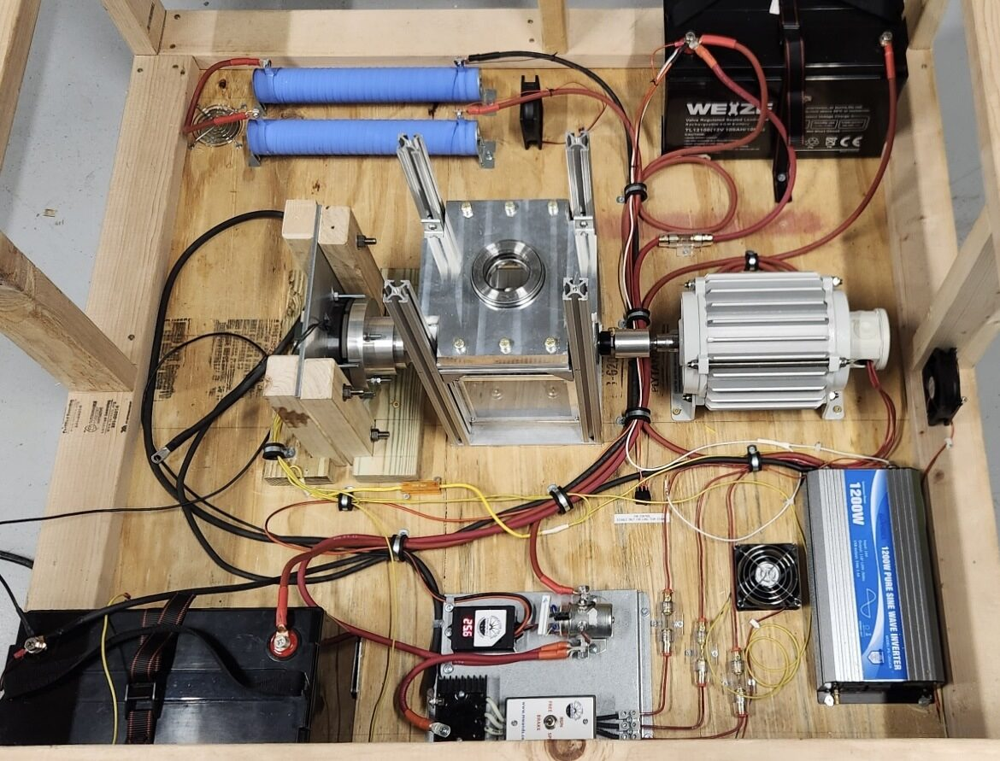
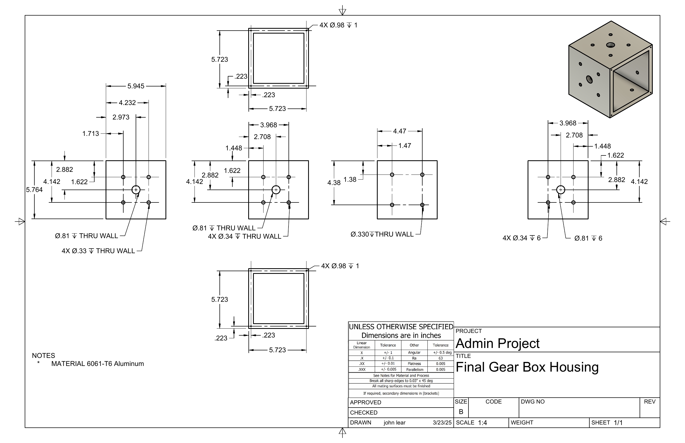
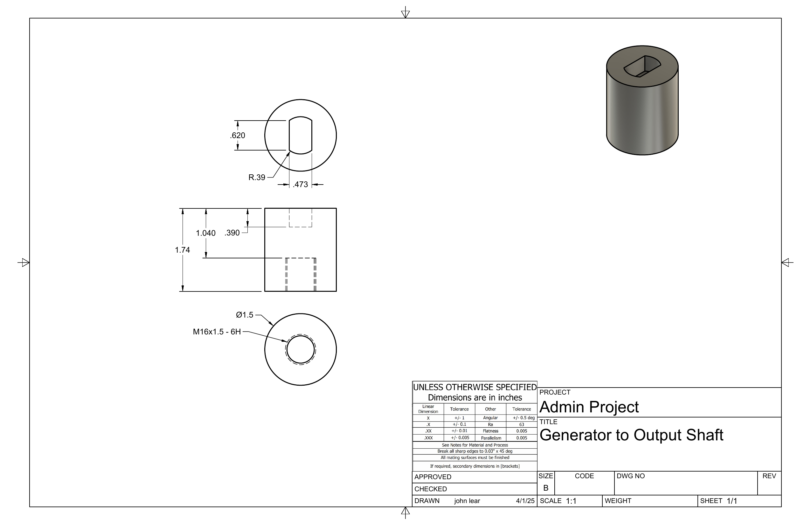
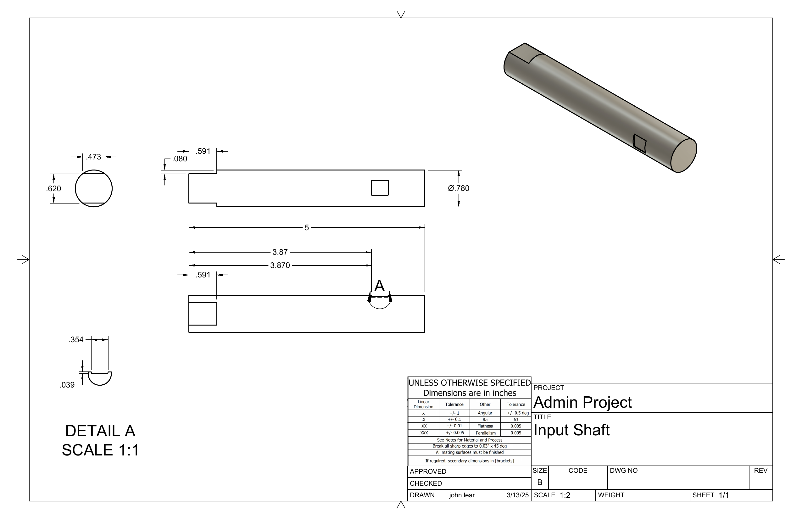
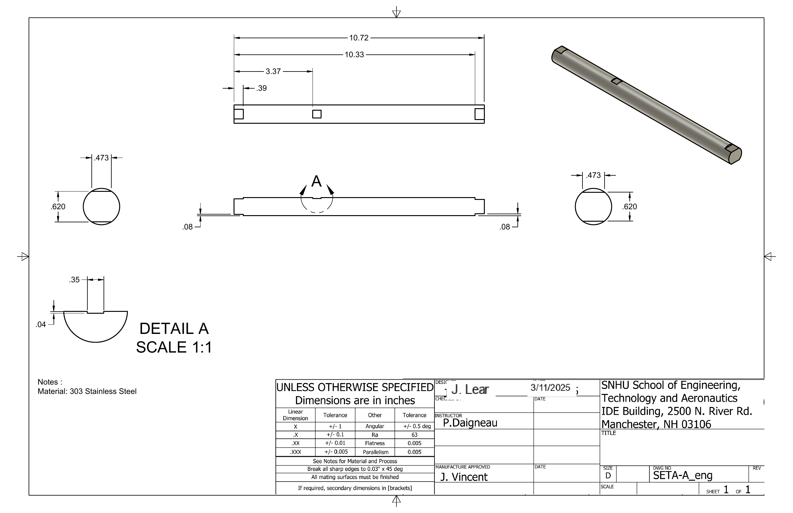
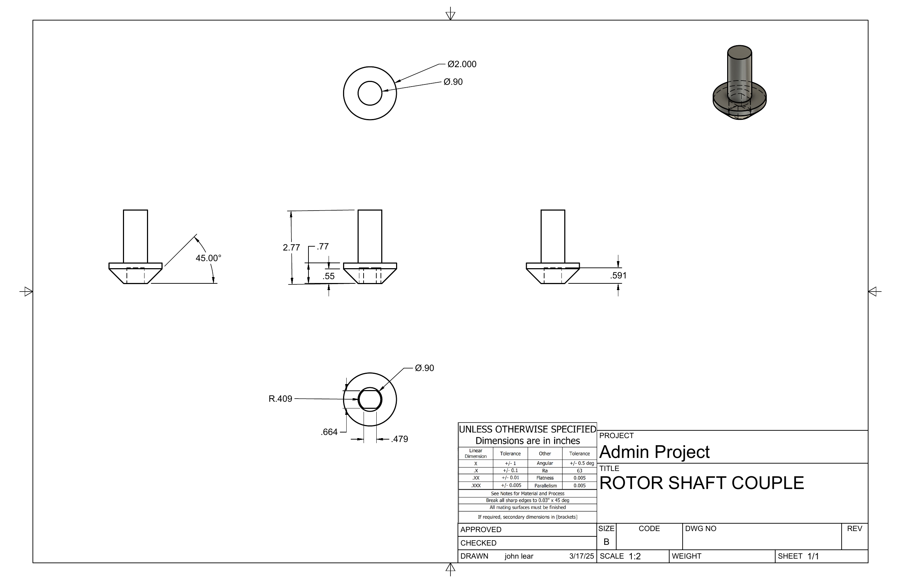
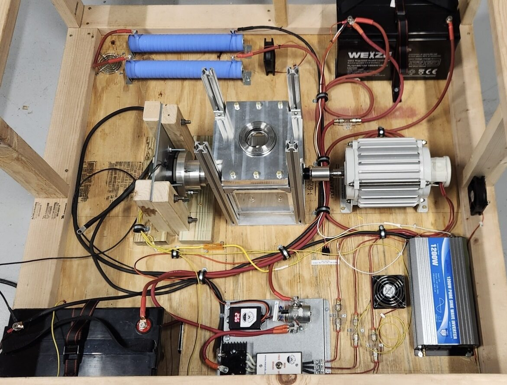
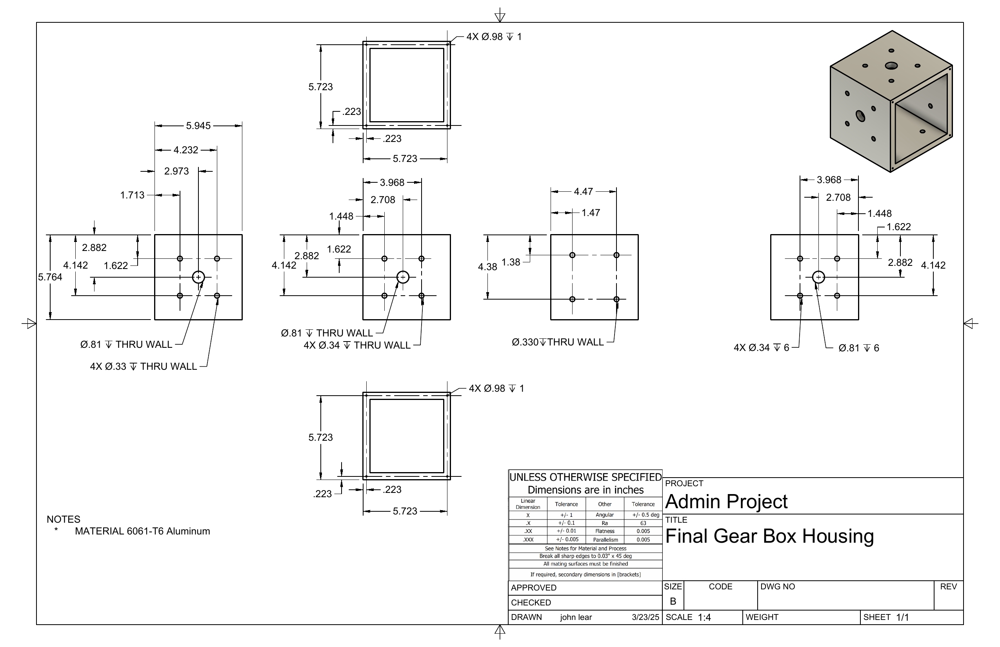
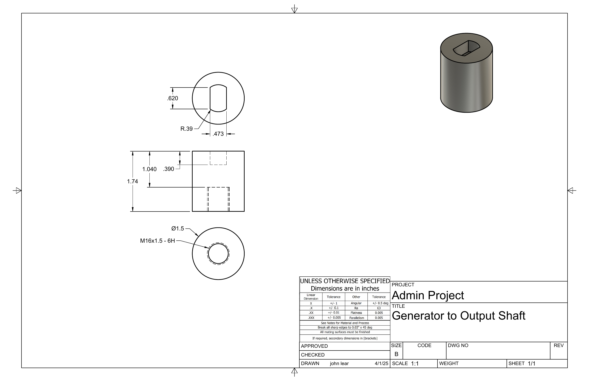
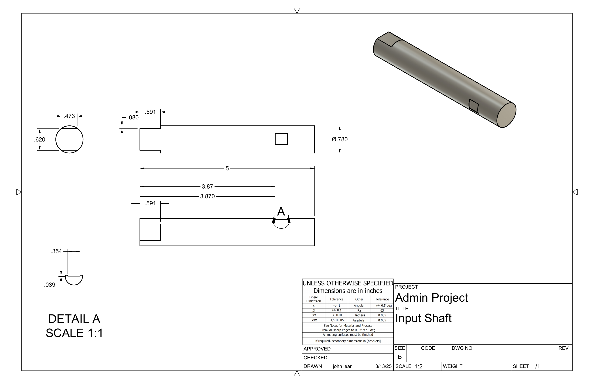
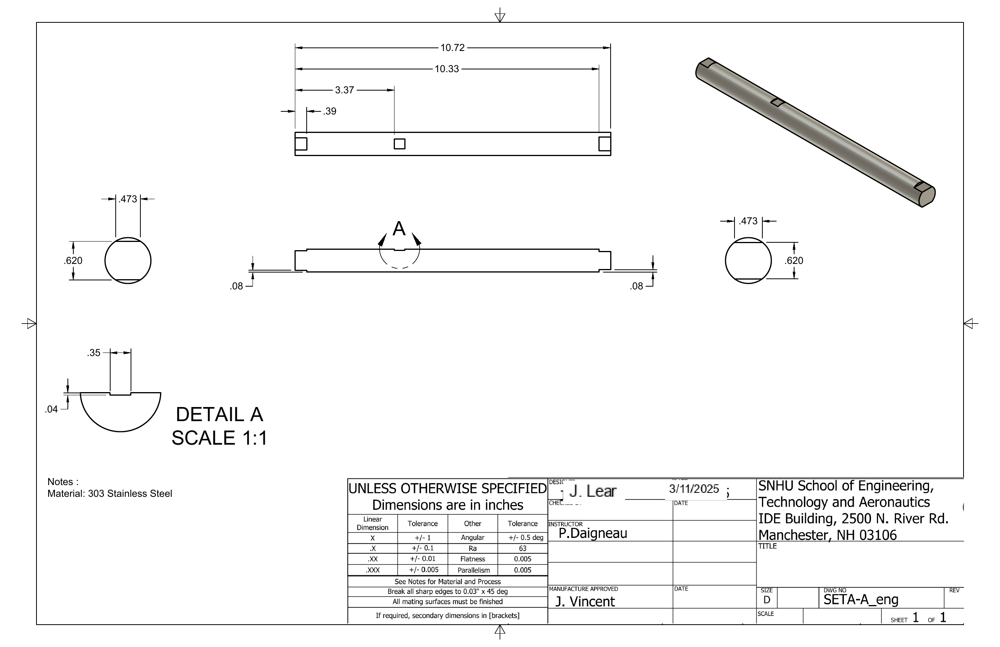
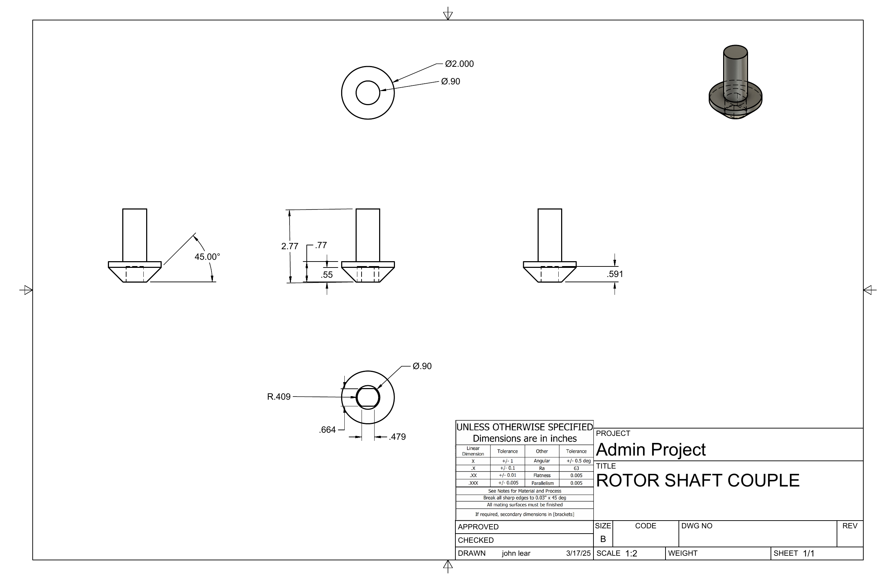